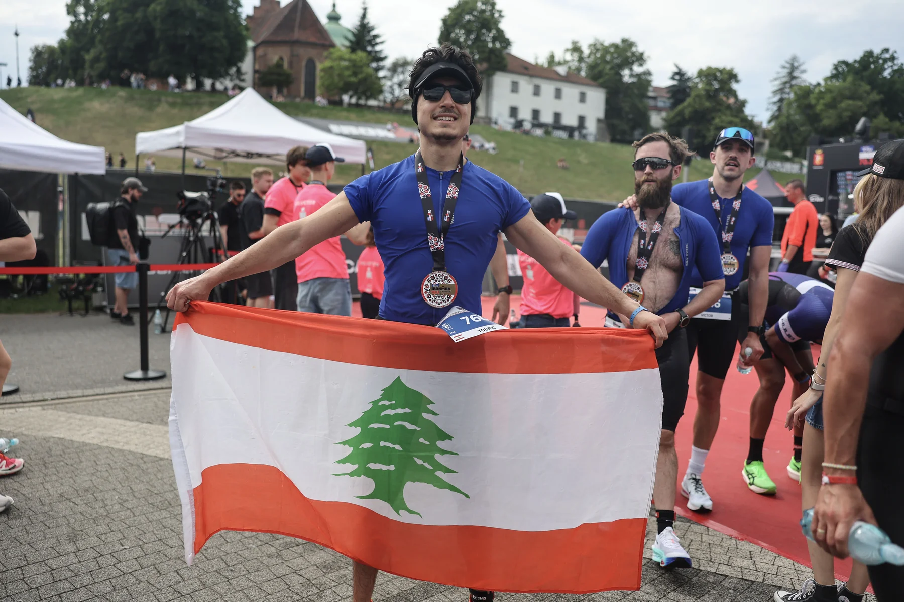

From 6:08 to Six Continents
How a difficult first IRONMAN 70.3 exposed the gaps and created a larger mission.

For journalists, partners, producers and organizations covering the Six Continents mission.
Toufic Abou Ali is a Lebanese founder-athlete and the Founder & CEO of Sira. After completing IRONMAN 70.3 Warsaw before turning 20, he began preparing to become the youngest male to complete official full-distance IRONMAN races on six continents.
Six continents. Six full IRONMAN races. One world-record attempt. Born in Lebanon, built globally, and executed through a professional system of coaching, health, recovery, logistics and proof.
How a difficult first IRONMAN 70.3 exposed the gaps and created a larger mission.
Building a company and a global endurance campaign under the same pressure.
A young athlete working against a real age deadline while awaiting final record requirements.
Turning mistakes in cycling, fueling and preparation into a complete execution system.
Bio, story, facts, quotes and media framing.
Official and selected race photography.
Race-day and finish footage.
Results, Strava, certificates and media links.
Mission and sponsor opportunity.
For fact checks, interviews or asset requests.
Partnership, media, or a direct conversation about the Six Continents mission.